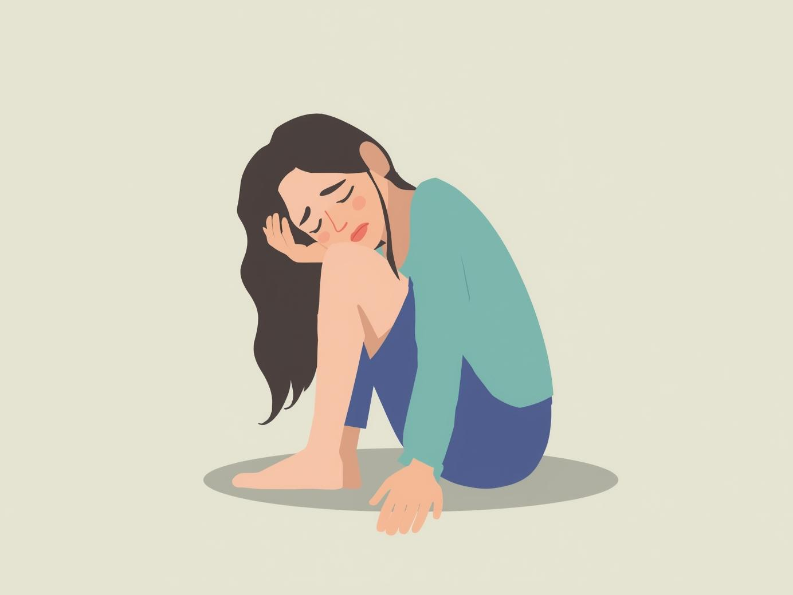

Relacionamento
O relacionamento é o vínculo construído entre duas pessoas, baseado em afeto, respeito e convivência, que pode assumir diferentes formas ao longo da vida. Mais do que uma troca de sentimentos, ele envolve responsabilidades, limites e aprendizados constantes. Nos próximos parágrafos, vamos refletir sobre o que é essencial para manter uma relação saudável, como enfrentar de maneira madura e cuidadosa o fim de um ciclo, e também como reconhecer sinais de um relacionamento abusivo, tema fundamental para que mulheres possam proteger sua autoestima e bem-estar.
Manter um relacionamento saudável exige atenção a pontos que vão além do amor. Respeito mútuo, comunicação clara e confiança são pilares fundamentais. É importante compreender que cada pessoa tem suas individualidades e que o espaço pessoal deve ser valorizado tanto quanto o espaço compartilhado. Pequenos gestos de carinho, apoio nos momentos difíceis e a capacidade de ouvir com empatia fortalecem a relação e ajudam a construir um ambiente de parceria e crescimento.
Quando um relacionamento chega ao fim, é natural sentir dor e insegurança, mas também é uma oportunidade de autoconhecimento. Lidar com o término envolve aceitar o processo de luto emocional, dar espaço para os sentimentos e, pouco a pouco, reconstruir a rotina sem a presença da outra pessoa. Buscar apoio em amigos, família ou até mesmo na terapia pode ser essencial para atravessar esse período. Encarar o fim como parte da vida e não como fracasso é um passo importante para seguir em frente com mais maturidade.
Entretanto, é fundamental estar atenta aos sinais de um relacionamento abusivo. Ciúmes excessivo, controle sobre amizades ou roupas, manipulação emocional, críticas constantes e atitudes que diminuem a autoestima são alertas vermelhos. Muitas vezes, o abuso começa de forma sutil e se intensifica com o tempo, tornando difícil perceber que se está em uma situação perigosa. Reconhecer esses sinais é o primeiro passo para buscar ajuda e romper com ciclos de violência. Amar nunca deve significar perder a própria liberdade, e toda mulher merece viver relações que a fortaleçam, não que a aprisionem.
Fique atenta ao sinais:
1.Ciúmes em excesso e tentativas de controlar suas amizades ou contatos;
2.Críticas constantes que diminuem sua autoestima;
3.Controle sobre roupas, horários ou escolhas pessoais;
4.Isolamento, afastando você de família e amigos;
5.Manipulação emocional, fazendo você se sentir culpada sem motivo;
6.Falta de respeito pelos seus limites físicos e emocionais;
7.Surtos de raiva seguidas de pedidos de desculpas repetitivos;
8.Ameaças, chantagens ou intimidações, mesmo que disfarçadas.
Se você se identificou com algum desses sinais, lembre-se de que não está sozinha. Procure apoio em pessoas de confiança, como amigos, familiares ou profissionais especializados. Existem também organizações e serviços de apoio que podem ajudar a garantir sua segurança e bem-estar. Sua vida e felicidade são prioridades, e você merece estar em um relacionamento que a respeite e valorize.
DISQUE 180